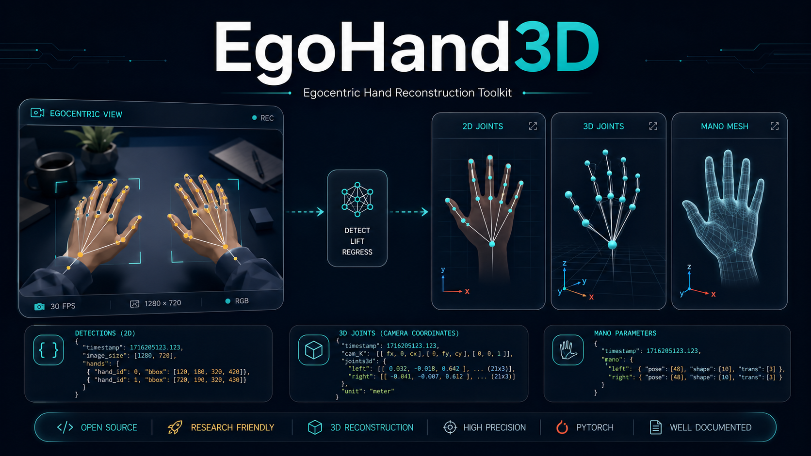

2D And 3D Exports
Export projected 2D hand joints, camera-space 3D joints, root-space joints, depth values, and camera metadata.

Egocentric Hand Reconstruction Toolkit
A practical command-line toolkit for first-person hand detection, 2D and 3D joint export, MANO parameter export, mesh reconstruction, video visualization, evaluation, reporting, and training workflow management.
Capabilities
Export projected 2D hand joints, camera-space 3D joints, root-space joints, depth values, and camera metadata.
Save MANO pose, shape, and camera parameters, plus OBJ mesh outputs for downstream analysis or visualization.
Run frame-level hand detection, keypoint export, overlay drawing, and output-video generation on first-person recordings.
Evaluate HOI4D-style 2D keypoints and generate JSON, CSV, Markdown, NPY, TXT, and overlay artifacts.
Build image and video processing manifests that match media files, prediction files, and labels.
Combine 2D, 3D, MANO, mesh, overlay, NPY, and NPZ files into one sample-level index.
Workflow
EgoHand3D keeps model assets external and focuses on the engineering layer around them: input collection, detection result organization, coordinate recovery, export formatting, visualization, evaluation, and report generation.
Quick Start
python egohand3d_cli.py export-3d \
--img_folder /path/to/images \
--out_folder outputs/3d_jointspython egohand3d_cli.py export-mano \
--img_folder /path/to/images \
--out_folder outputs/mano_paramspython egohand3d_cli.py manifest \
--image_dir /path/to/images \
--pred_dir outputs/2d_joints \
--out outputs/manifest.jsonpython egohand3d_cli.py merge \
--joints2d_dir outputs/2d_joints \
--joints3d_dir outputs/3d_joints \
--mano_dir outputs/mano_params \
--out outputs/merged_exports.jsonSample Outputs
Release Boundary
The public repository should publish the application-layer code, documentation, and this project website. Model weights, MANO data, datasets, uncertain-license example photos, generated outputs, and software-copyright registration drafts should remain private unless their licenses and disclosure requirements are clear.